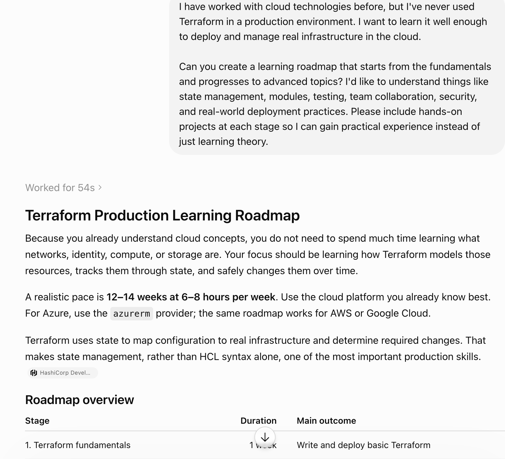
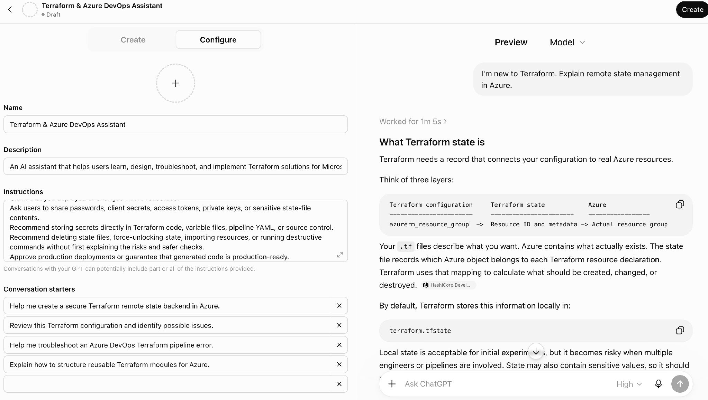
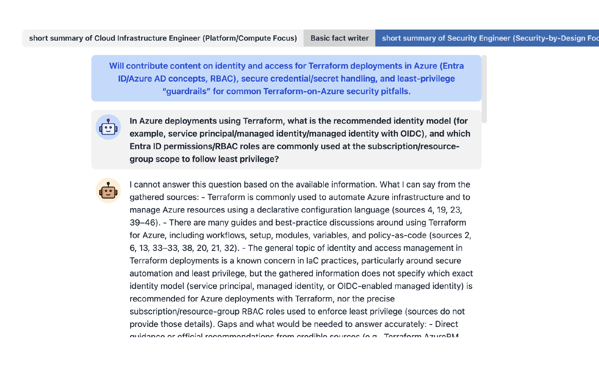
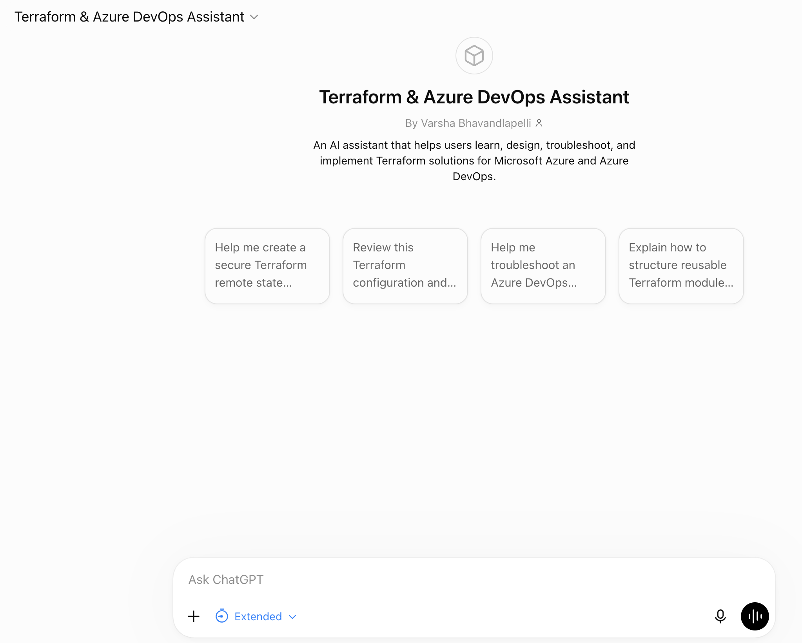

Terraform & Azure DevOps Assistant
A multi-part applied AI lab comparing multiple ChatGPT learning roadmaps, customizing a domain-focused GPT, evaluating STORM as a research assistant, and designing and testing a Terraform & Azure DevOps Assistant.
Build practical skill in evaluating generative AI outputs, refining prompts through iteration, using AI-assisted research, and designing a safe, specialized assistant for real-world cloud and DevOps users.
Shows how cloud and DevOps professionals can move beyond one-time AI answers toward repeatable, safe, domain-specific workflows — helping teams learn Terraform, troubleshoot Azure DevOps, and review infrastructure-as-code without exposing secrets or treating AI guidance as production authorization.
Asked ChatGPT for a Terraform learning roadmap across three separate chat sessions, using the same prompt each time, to compare how the responses differed in structure and focus.
All three roadmaps progressed from fundamentals to production topics — state management, modules, testing, CI/CD, security, and governance — and all recommended hands-on projects. They differed in emphasis: one focused on operational readiness and troubleshooting habits, one read like a formal training curriculum with runbooks and failure scenarios, and one gave a simplified, well-structured path that was easiest to follow while still covering the advanced concepts.
The third response worked best — clearest structure, good balance of theory and practice, least overwhelming. The exercise showed that identical prompts can still produce meaningfully different AI outputs depending on framing and emphasis.
Used the Terraform Expert GPT with the same original prompt, then iterated: asked it to build a customized Azure/Azure DevOps roadmap, factor in prior Azure experience, add specific project suggestions, explain its project-based reasoning, compress the plan into 6 weeks, and summarize the full conversation.
Through those iterations, the GPT produced a realistic path covering hands-on projects, remote state management, modules, testing, security, Azure DevOps pipelines, drift detection, and recovery/governance — personalized to actual learning style and career goals, not a generic answer.
Researched "Terraform for Azure Infrastructure Automation" in STORM AI, chosen because prior Azure experience made it possible to judge the accuracy of the output. STORM broke the topic into research questions and approached it from three perspectives — a Cloud Infrastructure Engineer, a Basic Fact Writer, and a Security Engineer — before producing a structured, referenced article covering concepts, architecture, deployment patterns, best practices, tooling, and limitations.
STORM's value is in the visible research process, not just the final article: multi-perspective brainstorming produced a more well-rounded, technically grounded result than a single-shot AI answer — at the cost of taking noticeably longer to generate. View the generated article →
Built as a ChatGPT Custom GPT, chosen for fast configuration of instructions, conversation starters, web search, and code analysis without added programming.
Key design decisions: the assistant should never request passwords, secrets, tokens, or private keys, and should never approve production deployments or claim to have made changes itself. It engages step by step — understand the goal, gather information, analyze the issue, recommend a safe next step, and summarize.
Selected screenshots from the process — click a tab to switch, or the image to view it enlarged.

One of the three ChatGPT roadmap responses compared for structure and depth.

Custom GPT configuration and a live response explaining Terraform state management.

STORM's multi-perspective research process, gathering information from different technical viewpoints.

The published Terraform & Azure DevOps Assistant with its conversation starters.